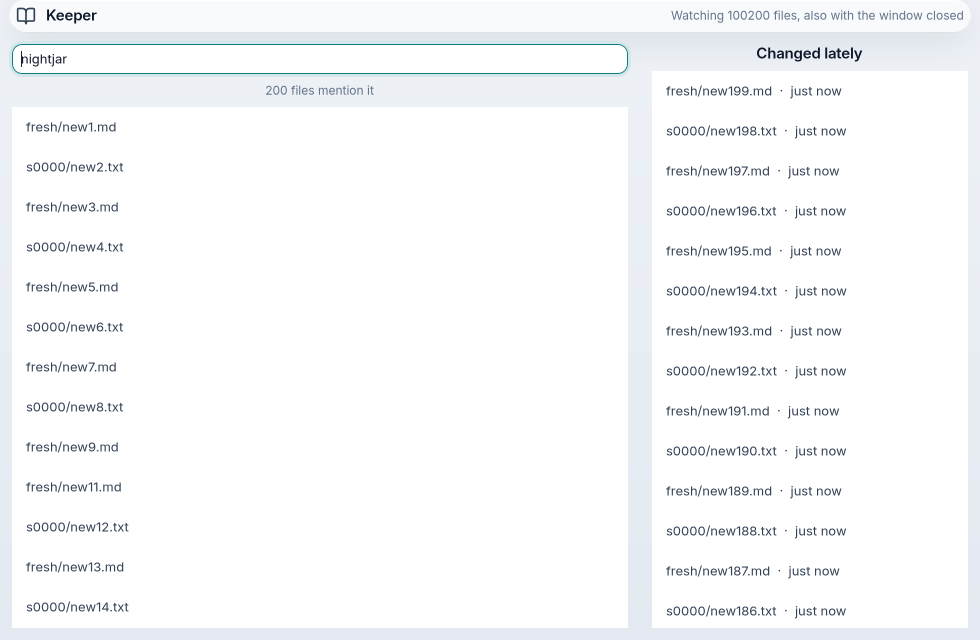
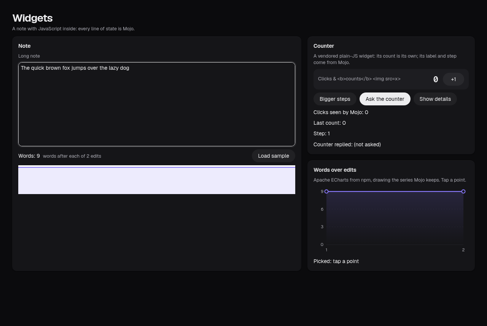

The product · data explorer
omxplorer
A spreadsheet, the video behind every row and the documents that explain it, on one page, on your own GPU.
omxplorer is the product; its page has the downloads. The rest are smaller apps, each one Mojo codebase, that show what the framework can do.
A spreadsheet, the video behind every row and the documents that explain it, on one page, on your own GPU.
Smaller apps that show it can be done: speech, ink, a database, a background app, JavaScript libraries, a GPU canvas, phone controls.

Ask for a map, get a map: an AG-UI agent answers with screens from 38 components, drawn natively while it streams.

Talk, and words appear. Whisper runs on the GPU inside the app's own process: no file, no socket, no server.

Pressure ink with pan and zoom. Strokes taper with the pen; panning moves the kept ink, never redraws it.

Notes in a SQLite file, searched as you type, still there tomorrow. Quit mid-sentence and the words are saved.

Keeps a folder searchable with its window shut: a tray item, notifications, and a watcher on its own thread.

CodeMirror and ECharts from npm, inside a native app, restyled live by the theme. Agents can read and set them.

A canvas the app paints itself, around native controls: how map and photo apps are built.

Mojo drives GTK, AppKit, UIKit and Android views directly: no Swift, no Kotlin, the platform's own keyboard and screen reader.
Type a question; a model writes the chart and the query; the GPU runs it; omxcode draws it.
An Excalidraw-style editor as a widget on the web and in a native web view, the page logic in Mojo.
The same app in a browser with the work on the visitor's GPU.